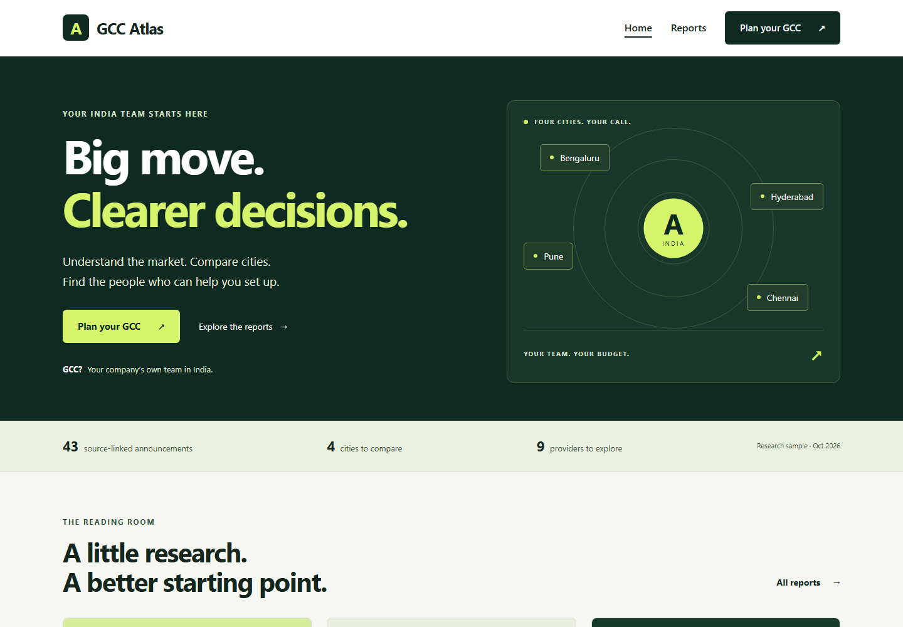
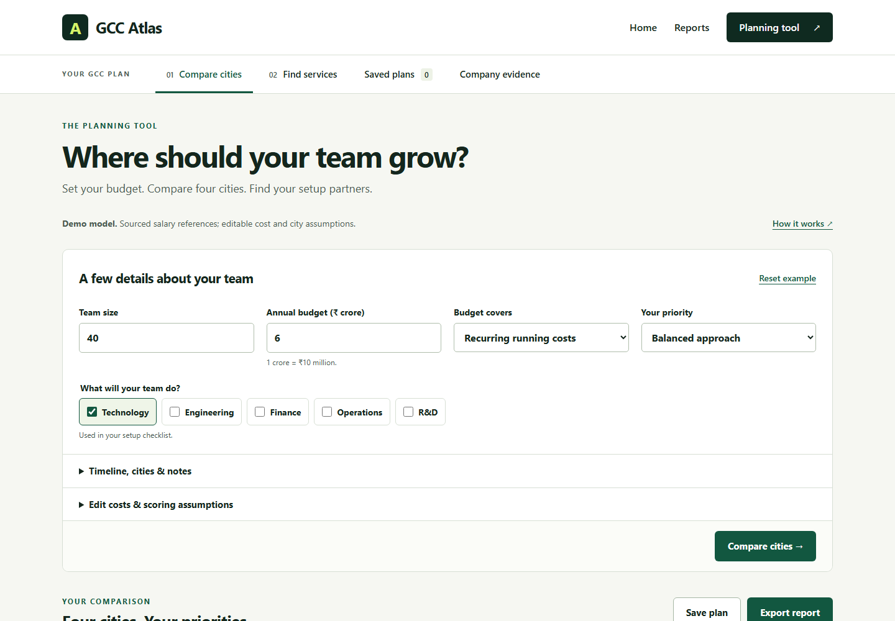
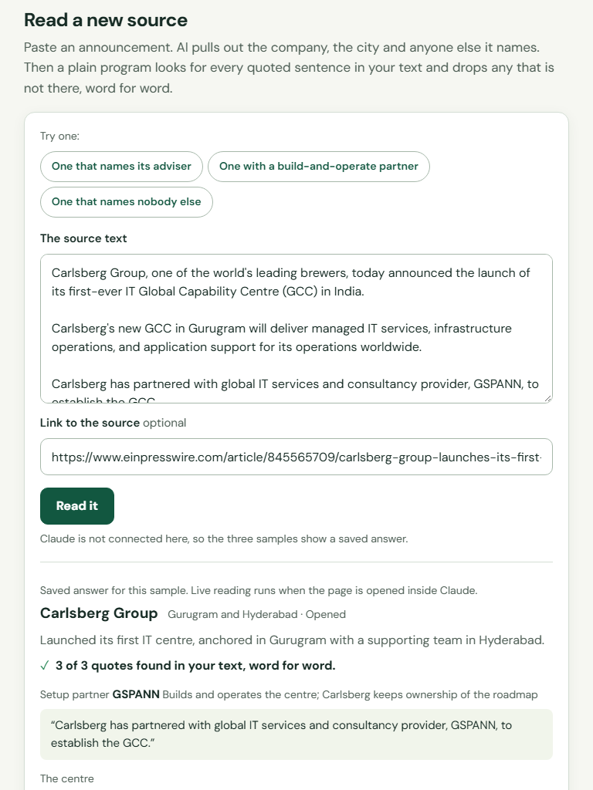

GCC Atlas
Receipts for India’s GCC market
What a single source of truth should look like, who it serves first, and a prototype that already works on real sources.
Product Intern assignment · Gagan Mahajan · 13 October 2026
The problem
Everyone in the GCC chain knows something. A newcomer has to piece it together.
The basics are disputed
Reports give different counts of GCCs. Their dates and definitions are hard to compare.
The chain is long
Advisers, landlords, recruiters, payroll firms, lawyers, auditors and states. Each sees one slice.
So people ask around
With delivery evidence scattered, a new company falls back on referrals.
2
Even the count is disputed
How many GCCs does India have? It depends who you ask.
1,700+
Government of India, Press Information Bureau
1,800+
Dun & Bradstreet, GCC 2026 report
2,117
nasscom and Zinnov, FY2026. Or 3,728 if you count centres, not companies.
536
listed with sources in Flexiple’s directory, Aug 2026
These are different snapshots. A useful record must show its date, scope and definition.
Sources: PIB; Dun & Bradstreet GCC 2026; Zinnov-nasscom GCC Landscape 2026; Flexiple, Aug 2026
3
The players
Seven players. Each sees one slice.
| Player | What it holds | Why it does not share |
|---|---|---|
| Company entering India | A budget and a deadline | Buys once, so it cannot compare |
| Advisers and build-operate partners | Playbooks and past clients | Sells the answer it recommends |
| Landlords and brokers | Rents and lease terms | Paid when the deal closes |
| Recruiters, payroll and EOR firms | Pay data and hiring speed | Paid per hire or per head |
| Law and audit firms | Structure and compliance risk | Almost never named in public |
| State governments | Incentives, land, clearances | Competing with other states |
| Existing GCCs | What actually happened | No reason to publish it |
The chain is the one listed in the assignment brief. The last column is my reading of each player’s incentive.
4
Who is hurt: the newcomer
The public record shows almost none of the chain.
Who 43 announcements of new centres name
Government
13 of 43
Setup partner
5 of 43
Building or landlord
5 of 43
Recruiter
0 of 43
Law firm
0 of 43
Auditor
0 of 43
Payroll firm
0 of 43
How I got this
I read the 42 sources behind Flexiple’s own list of new centres and wrote down every outside party each one names.
AI did the reading. A program then matched every quoted sentence to its live page.
A source that names no recruiter does not prove none was used. It shows the record is silent.
43 announcements, 42 sources cited on Flexiple’s new-GCC list. Checked 13 Oct 2026.
5
How much
The decision is large. Its cost of failure is still unmeasured.
$41,700
reported annual revenue per employee: $98.4 billion / 2.36 million. My calculation.
4 to 6
months to a working India entity, by Flexiple’s estimate. A planning reference, not a guarantee.
583
mid-market GCCs, more than one in four. A segment worth testing with.
Revenue shows the scale of the sector. It does not tell us a centre’s setup cost or the loss from a bad choice.
Sources: Zinnov-nasscom India GCC Landscape 2026; flexiple.com/gcc/setup
6
What they do today
Four ways to find out. No shared record.
A referral
Fast and free. One person’s experience, and often a favour.
An advisory study
Tailored advice. Cost and transparency vary by firm.
An industry report
Market context. Engagement-level detail varies.
A provider’s website
Service claims and case studies. Delivery needs checking.
The opportunity: put the source, the claim and the gaps in one place.
7
The opportunities
Five layers of truth. Connect the evidence.
| Layer | The question it answers | Where it stands |
|---|---|---|
| GCC registry | Who is here? | Flexiple lists 536 with sources |
| Coming next | Who is arriving? | Flexiple tracks 48 announcements |
| Talent and pay | Who can I hire, and for how much? | Flexiple’s talent graph, 97.9M profiles |
| Location | Which state, which building, what incentive? | City pages, policy PDFs and lease filings |
| Provider proof | Who actually delivered, and for whom? | Scattered case studies; uneven disclosure |
Flexiple already covers companies, talent and locations. Provider proof is the gap we would investigate first.
Source: Flexiple’s GCC directory, statistics and salary method pages, read 13 Oct 2026
8
Which matters most
Provider proof matters most, for three reasons.
1
It is the open question
No announcement names a recruiter, law firm, auditor or payroll firm. Only 5 of 43 name a setup partner.
2
It compounds
Each checked engagement improves every later search. Providers that deliver have a reason to bring their own proof.
3
Flexiple may help check the result
A talent graph that sees headcount by company and city could confirm that a 60-person team in Pune exists.
Signals and location data come out of the same pipeline.
9
The solution
A record where every claim carries its receipt.
Step 1
A source
A press release, case study, lease filing or state policy.
Step 2
AI reads it
It proposes who did what, each with the sentence that says so.
Step 3
A program checks
The sentence must be on the page, word for word, or it is dropped.
Step 4
A person approves
Proposed review workflow; rerun checks as sources change.
Three strengths of proof:
Named in a public source
Backed by data: headcount, filings, leases
Confirmed by the client
10
For whom first
The first-time entrant, building its India shortlist.
A company planning 20 to 200 people in India. Its India lead has a budget, a deadline and no network there.
- 583 mid-market GCCs already exist: more than one in four.
- Flexiple’s GCC page is written for it: 20 or more people over three years.
- It may have little India setup experience to draw on.
Its four questions
| Question | Answered today by |
|---|---|
| Do companies like us do this? | The registry |
| Which city? | Talent and pay data |
| What will it cost? | A rough sum |
| Who do we trust to set it up? | A referral |
Sources: Zinnov-nasscom India GCC Landscape 2026; flexiple.com/gcc
11
The prototype
It works today, on real sources.


Read. Compare. Shortlist.
- Reports grounded in 43 checked announcements
- Compare four cities with editable cost assumptions
- Explore legal, office, hiring and setup services
- Save a plan with providers and source links
City scores are demo assessments. A named relationship is not proof of good delivery.
Working website + planning tool · browser-saved plans · linked sources
12
How AI is used
The AI step is checked, not trusted.
AI proposes
It reads the pasted text and returns the company, the city and anyone else named, each with one quoted sentence.
Code decides
Each quote is searched for in the text. One that is not there word for word is thrown away, with its claim.
Tested against invented quotes
In the tests a made-up sentence is dropped, and a made-up proof sentence rejects the whole answer.
This website replays three checked samples. Live reading requires the Claude integration and has not been verified with the real model.

13
Positioning
The receipt layer for India’s GCC market.
| Instead of | Its limit | The record gives |
|---|---|---|
| A referral | One person’s experience | Recorded engagements with their source |
| An advisory study | Paid advice; method varies | Open reading and a visible method |
| An industry report | Totals without names | Names, dates and the sentence behind each |
| A provider’s website | Evidence varies across claims | What is claimed beside what is shown |
Not a directory and not a review site. A record anyone can check.
14
Why each side comes
A reason for each side to come.
| Who | Uses today | Comes for |
|---|---|---|
| Entrants | Referrals, a consultant | A shortlist with proof, in minutes |
| Providers that deliver | Ads, events, logo walls | Proof that beats a bigger marketing budget |
| Existing GCCs | Company announcements and peer networks | Correcting their own record, seeing peers |
| State governments | Roadshows and policy PDFs | Their agreements shown beside what opened |
| Analysts and press | Each other’s numbers | A source they can cite |
15
The hard part
Flexiple is itself a provider. So the rules are public.
Rule 1
Order by evidence only. No paid placement.
Rule 2
Flexiple’s own work sits under the same rules, labelled as its own.
Rule 3
Show what could not be verified. Flexiple’s statistics page already does.
Rule 4
Anyone named can correct an entry by sending a source.
16
First 90 days
One measure: roles on record per centre.
0.5 of 7
roles per centre are on the public record today, in this sample of 43.
Days 1 to 30
Every centre Flexiple lists, plus leases, case studies and state agreements.
Days 31 to 60
Test provider submissions and client confirmation. Explore headcount checks with the data team.
Days 61 to 90
Entrant shortlists: who has built a centre like ours, in this city.
Test first, with ten calls: will providers give proof to a record run by a rival, and will clients confirm it?
23 named parties across 43 announcements, against 7 roles in the chain
17
Try it
Open the record. Check any line of it.
Read the reports. Compare cities. Save a shortlist with its sources. Built with AI; assumptions stay visible.
Gagan Mahajan · Product Intern assignment
18